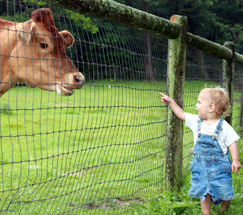
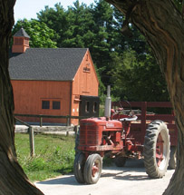

Come visit Drumlin Farm!
Enjoy a relaxing change of pace at Drumlin Farm, where you and your family can explore and learn about a real working farm and wildlife sanctuary.
Kids of all ages love visiting the animals, the learning garden and of course riding the hay wagon. Afterwards, visit wildlife exhibits or hike to the top of our drumlin. Read More
Happening this week
- Saturday, Dec 10
- 9am: Drumlin Farm 4-H Club
(Family, 5 – 16 yrs, 2 hr) - 12: Know Your Food: Simple Cheesemaking (Adult, 4 hr)
- Thursday, Dec 15
- 3:30pm: Fireside Fables
(Family, 0 – 8 yrs, 1.5 hr)
- Saturday, Dec 17
- 1pm: Naturalist Walk (Adult, 2 hr)